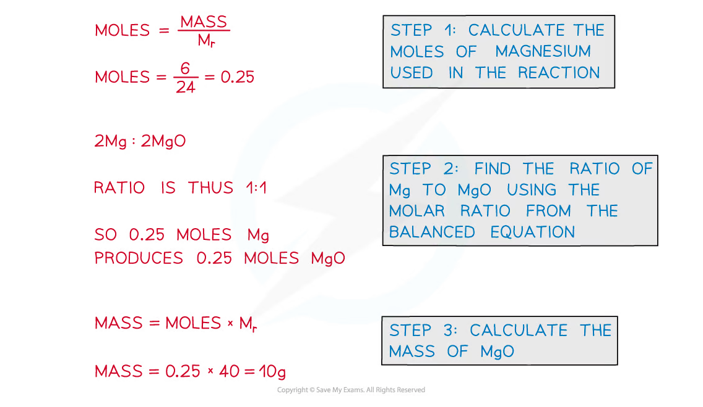
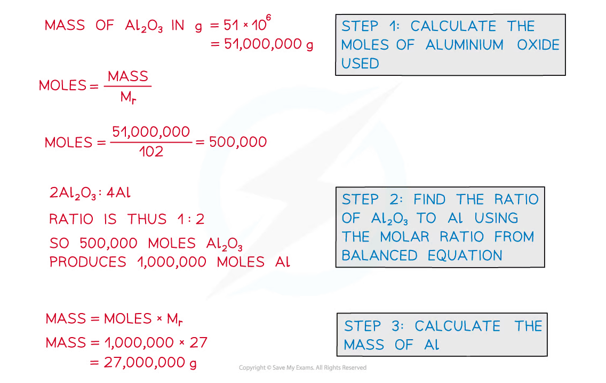
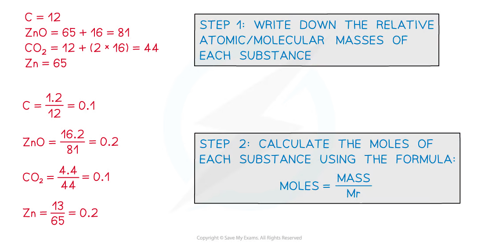
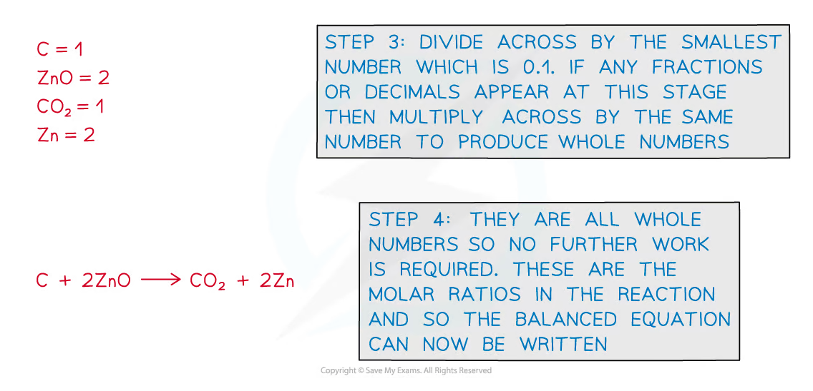

1.2 Amount of Substance
Concentration, reacting quantities, gas volumes and yield
1.2 Amount of Substance
本页对应 1.2 Amount of Substance.pdf.pdf，整理 amount of substance 的四类 calculation：concentration、reacting masses、reacting gas volumes，以及 percentage yield / atom economy。专业词汇保留 English，所有 calculation 都先写 balanced equation，再进行 mole-ratio conversion。
Learning objectives
学完本页后，你应该能够：
- calculate amount of substance from mass、concentration、gas volume、pressure and temperature；
- convert between mass concentration
g dm⁻³and molar concentrationmol dm⁻³； - use mole ratios from a balanced equation to calculate reacting masses；
- calculate gas volume at room conditions and use the ideal gas equation；
- identify the limiting reactant and calculate theoretical yield；
- calculate percentage yield、atom economy and explain their economic importance。
1.2.1 Concentration calculations
Amount of substance in solution
For a solute dissolved in a measured volume of solution：
\[ n=\frac{m}{M_r} \]
where n is amount in mol，m is mass in g，and Mᵣ is molar mass in g mol⁻¹。
If concentration is given in mol dm⁻³，use：
\[ n=cV \]
where c is molar concentration in mol dm⁻³ and V is volume in dm³。
Therefore：
\[ c=\frac{n}{V}=\frac{m}{M_rV} \]
Mass concentration
Mass concentration tells us the mass of solute in each dm³ of solution：
\[ \text{mass concentration}=\frac{\text{mass of solute in g}}{\text{volume of solution in dm}^3} \]
Units are g dm⁻³。To convert mass concentration into molar concentration，divide by the molar mass：
\[ c(\mathrm{mol\ dm^{-3}})=\frac{\text{mass concentration (g dm}^{-3})}{M_r(\mathrm{g\ mol^{-1}})} \]
Worked example：sodium chloride solution
6.34 g of NaCl is dissolved to make 250 cm³ of solution。
- Convert the volume：
\[ 250\ \mathrm{cm^3}=0.250\ \mathrm{dm^3} \]
- Calculate mass concentration：
\[ \frac{6.34}{0.250}=25.4\ \mathrm{g\ dm^{-3}} \]
- Calculate molar concentration using
Mᵣ(NaCl) = 58.5：
\[ c=\frac{25.4}{58.5}=0.434\ \mathrm{mol\ dm^{-3}} \]
Unit conversions
Use these conversions carefully：
\[ 1\ \mathrm{dm^3}=1000\ \mathrm{cm^3},\qquad 1\ \mathrm{cm^3}=1\ \mathrm{mL} \]
Thus，to convert cm³ to dm³，divide by 1000；to convert dm³ to cm³，multiply by 1000。
Parts per million (ppm)
For a very dilute gas or pollutant，concentration may be expressed as parts per million：
\[ \text{concentration in ppm}=\frac{\text{volume of gas}}{\text{volume of air}}\times10^6 \]
For example，2.5 cm³ of a gas in 10 000 cm³ of air gives：
\[ \frac{2.5}{10000}\times10^6=250\ \mathrm{ppm} \]
Before substituting，check whether the question asks for mass concentration or molar concentration，and whether volume is in cm³ or dm³。A concentration in g dm⁻³ is not the same quantity as one in mol dm⁻³。
1.2.2 Reacting mass calculations
The coefficients in a balanced chemical equation give the mole ratio of reactants and products. They do not directly give a mass ratio because different substances have different molar masses。
Standard method
- Write and balance the equation。
- Convert the known mass into moles using
n = m/Mᵣ。 - Use the balanced-equation ratio to find moles of the required substance。
- Convert moles into mass using
m = nMᵣ。 - Check units and significant figures。
Worked example：magnesium oxide
Calculate the mass of MgO made from 6.0 g of magnesium。
\[ \ce{2Mg(s) + O2(g) -> 2MgO(s)} \]
The mole ratio Mg : MgO is 2 : 2, which simplifies to 1 : 1。
\[ n(\ce{Mg})=\frac{6.0}{24.0}=0.25\ \mathrm{mol} \]
Therefore，n(MgO) = 0.25 mol and：
\[ m(\ce{MgO})=0.25\times40.0=10.0\ \mathrm{g} \]

Large-scale mass calculations
The same method applies when values are given in tonnes or kilograms. Keep the mass unit consistent until the final conversion：
\[ 1\ \mathrm{tonne}=10^6\ \mathrm{g} \]
For example，51,000,000 g of \ce{Al2O3} is 500,000 mol because Mᵣ(\ce{Al2O3}) = 102。From：
\[ \ce{2Al2O3 -> 4Al} \]
the mole ratio Al₂O₃ : Al is 1 : 2，so the amount of aluminium is 1,000,000 mol and its mass is 27,000,000 g = 27 tonnes。

Balancing and reacting masses
If the equation is not balanced，the mole ratio will be wrong and every subsequent mass calculation will be wrong。For example：
\[ \ce{C(s) + ZnO(s) -> CO2(g) + Zn(s)} \]
has unequal oxygen atoms. The balanced equation is：
\[ \boxed{\ce{C(s) + 2ZnO(s) -> CO2(g) + 2Zn(s)}} \]
The mole ratio is 1 : 2 : 1 : 2。


1.2.3 Reacting volume calculations
Molar gas volume
At room temperature and pressure，one mole of gas occupies approximately 24.0 dm³：
\[ n=\frac{V}{V_m},\qquad V=nV_m \]
where Vₘ = 24.0 dm³ mol⁻¹ at room temperature and pressure. At standard temperature and pressure，a commonly used value is 22.4 dm³ mol⁻¹。Use the value specified in the question。
Worked example：gas volume from moles
Calculate the volume occupied by 4.5 dm³ of carbon dioxide in moles at room temperature and pressure：
\[ n(\ce{CO2})=\frac{4.5}{24.0}=0.1875\ \mathrm{mol} \]
If the gas is used in a reaction，then apply the balanced-equation ratio after finding its moles。
Reacting gas volumes
At the same temperature and pressure，gas volumes react in the same simple ratio as the coefficients in the balanced equation. For propane combustion：
\[ \ce{C3H8(g) + 5O2(g) -> 3CO2(g) + 4H2O(g)} \]
The volume ratio is 1 : 5 : 3 : 4。Therefore，6.5 dm³ of propane produces：
\[ V(\ce{H2O})=6.5\times4=26.0\ \mathrm{dm^3} \]
This shortcut works only when the gases are measured at the same temperature and pressure。
Ideal gas equation
When pressure、temperature or volume is specified，use：
\[ pV=nRT \]
where p is pressure in Pa，V is volume in m³，n is amount in mol，R = 8.31 J mol⁻¹ K⁻¹ and T is temperature in K。
Rearrangements include：
\[ V=\frac{nRT}{p},\qquad n=\frac{pV}{RT},\qquad T=\frac{pV}{nR} \]
Worked example：ideal gas volume
Calculate the volume of 0.781 mol of gas at 220 kPa and 21°C。
\[ T=21+273=294\ \mathrm{K},\qquad p=220000\ \mathrm{Pa} \]
\[ V=\frac{0.781\times8.31\times294}{220000}=0.00867\ \mathrm{m^3}=8.67\ \mathrm{dm^3} \]
For a volume in cm³ or dm³，convert to m³ before using pV=nRT：
\[ 1\ \mathrm{dm^3}=1.00\times10^{-3}\ \mathrm{m^3} \]
1.2.4 Calculations of product
Limiting reactant and theoretical yield
The limiting reactant is completely used up first，so it determines the maximum amount of product. Other reactants are in excess。
To identify it，calculate the available moles of each reactant and compare them with the balanced-equation ratio. Use the limiting reactant to calculate the theoretical yield。
Percentage yield
The actual yield is the amount of product obtained experimentally. The theoretical yield is the maximum amount predicted from stoichiometry：
\[ \text{percentage yield}=\frac{\text{actual yield}}{\text{theoretical yield}}\times100 \]
For example，if the actual yield is 4.8 g and theoretical yield is 6.4 g：
\[ \text{percentage yield}=\frac{4.8}{6.4}\times100=75\% \]
Percentage yield may be less than 100% because of incomplete reaction、side reactions、reversible reactions、product loss during transfer or purification，and measurement uncertainty。
It should not normally exceed 100%。A value above 100% suggests wet or impure product，incorrect measurement，or an error in the calculation。
Atom economy
Atom economy measures how much of the reactant atoms become the desired product：
\[ \text{atom economy}=\frac{M_r(\text{desired product})}{\sum M_r(\text{all reactants})}\times100 \]
For the reduction of iron(III) oxide by carbon monoxide：
\[ \ce{Fe2O3 + 3CO -> 2Fe + 3CO2} \]
\[ \text{atom economy}=\frac{2\times55.8}{159.6+(3\times28.0)}\times100=45.9\% \]
High atom economy means less raw material is wasted and fewer unwanted by-products need to be separated or disposed of。It is an important factor in green chemistry and industrial process design。
Percentage yield vs atom economy
| Quantity | What it measures | Depends on |
|---|---|---|
| Percentage yield | How much product was actually obtained compared with the theoretical maximum | Experimental conditions、losses、side reactions and purification |
| Atom economy | The proportion of reactant atoms in the desired product | The balanced equation and selected reaction pathway |
Atom economy is a theoretical property of a reaction；percentage yield is an experimental result。A reaction may have high atom economy but a low percentage yield if the process is difficult to carry out efficiently。
Exam checklist
Source note
本页面对应：Note per Chapter/Note per Chapter/1.2 Amount of Substance.pdf.pdf。页面中的 reacting-mass calculation diagrams 均从该 PDF 的 embedded images 独立提取，并转换为 RGB white-background PNG 后保存到 assets/notes/amount-of-substance/。